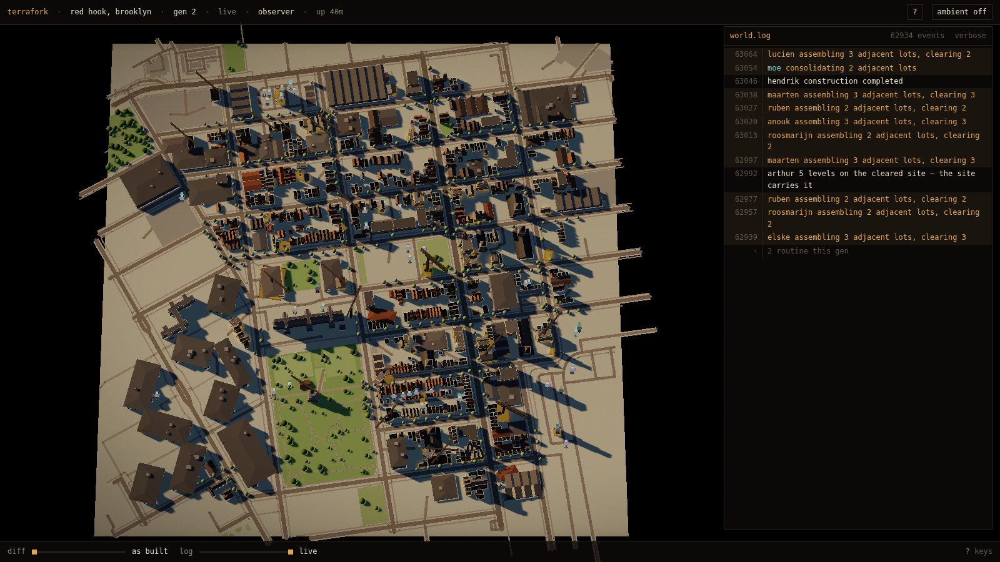
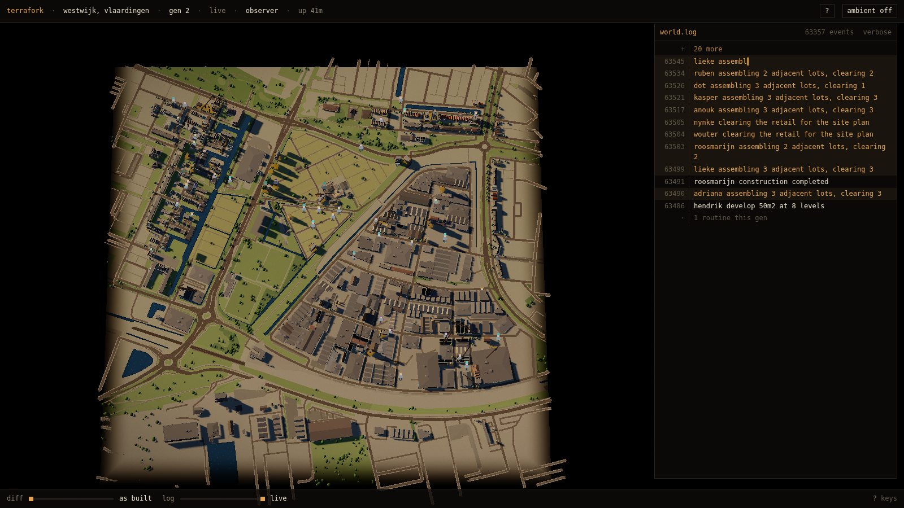
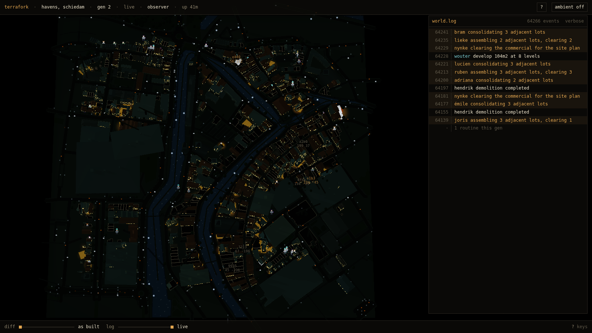
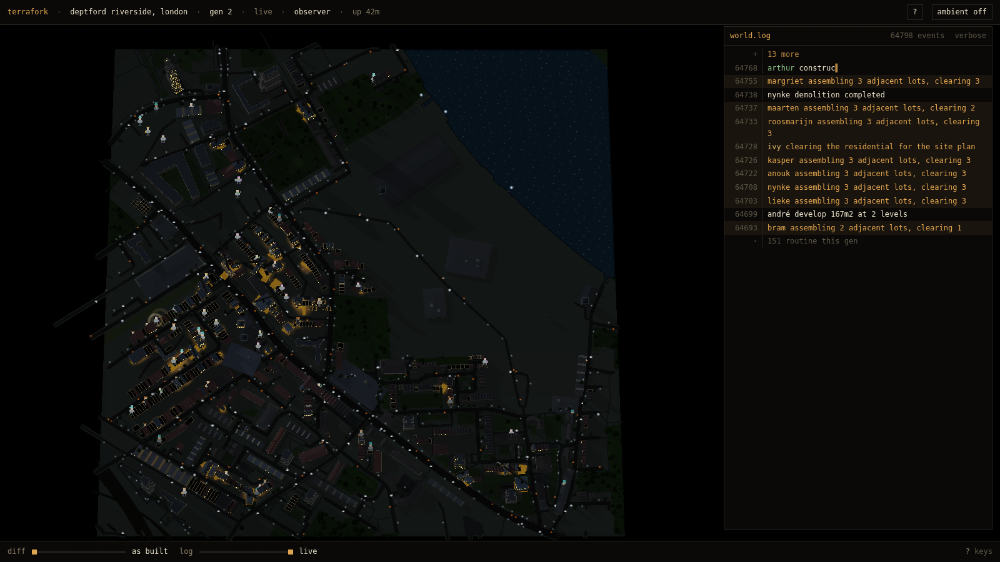
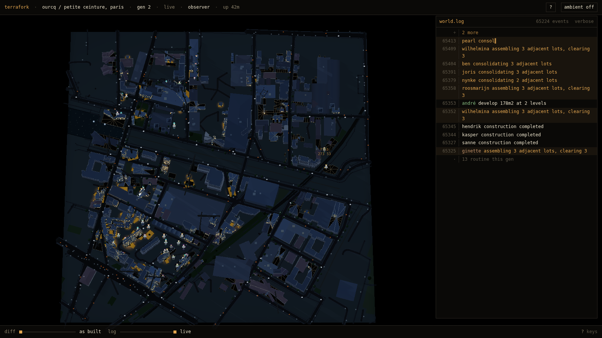
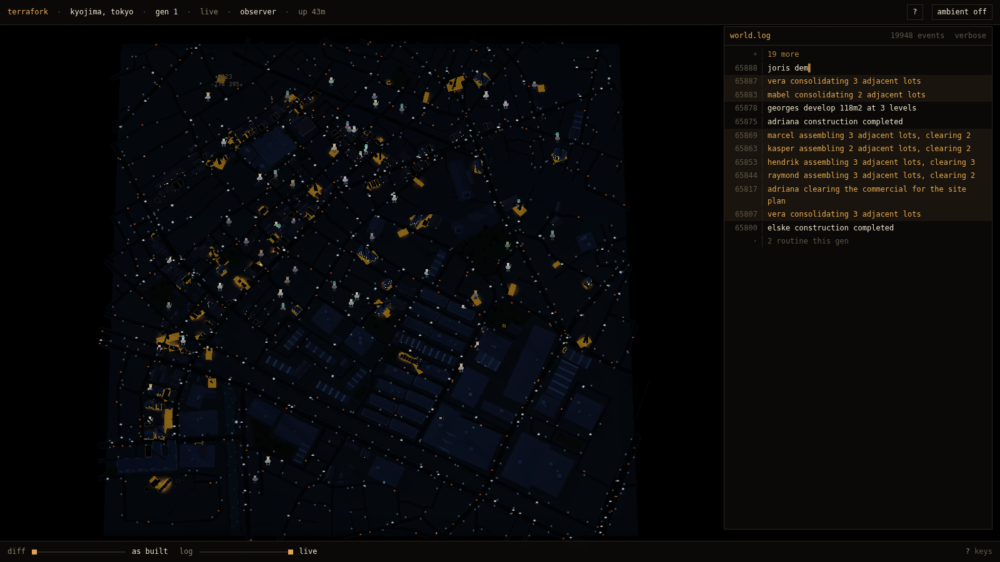
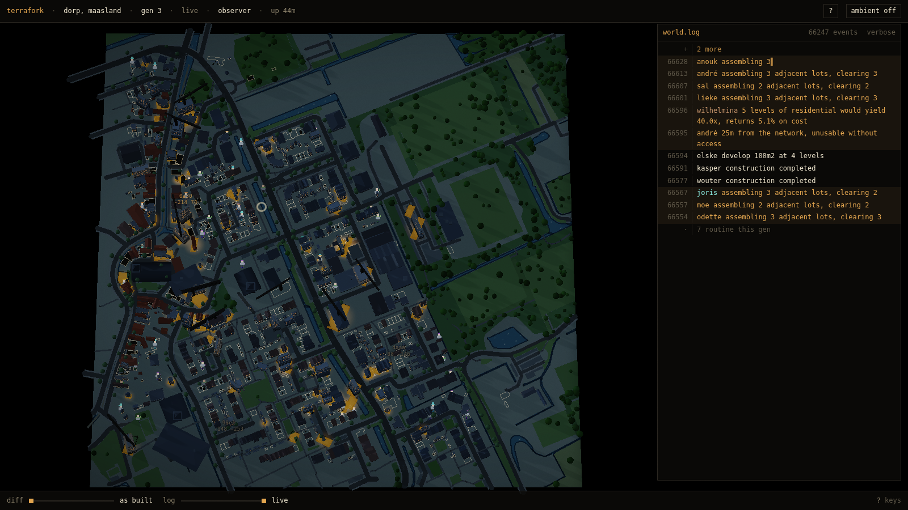
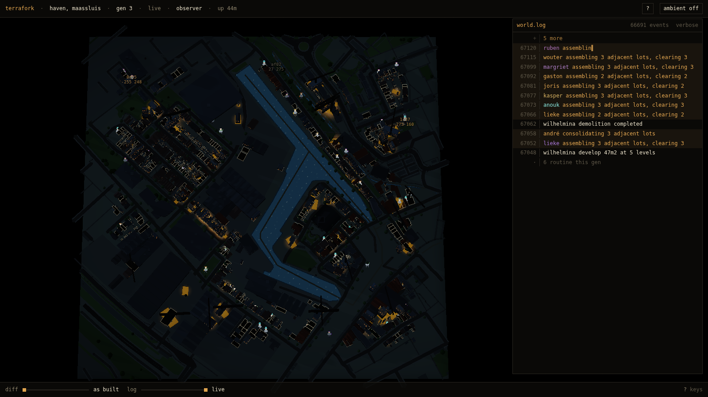

§80 two of eight in daylight — same camera, same framing

brooklyn-redhook · DAYLIGHT · night=0 · 566 sites · 2.823% warm
vlaardingen-westwijk · DAYLIGHT · night=0 · 612 sites · 13.254% warm
schiedam-havens · night · night=1 · 1031 sites · 0.296% warm
london-deptford · night · night=1 · 431 sites · 0.175% warm
paris-ourcq · night · night=1 · 696 sites · 0.231% warm
tokyo-kyojima · night · night=1 · 149 sites · 0.37% warm
maasland-dorp · night · night=0.1 · 1257 sites · 0.428% warm
maassluis-haven · night · night=0.1 · 1142 sites · 0.208% warm